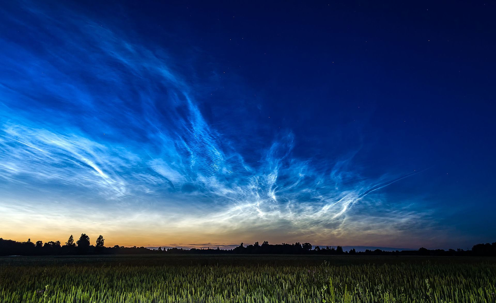
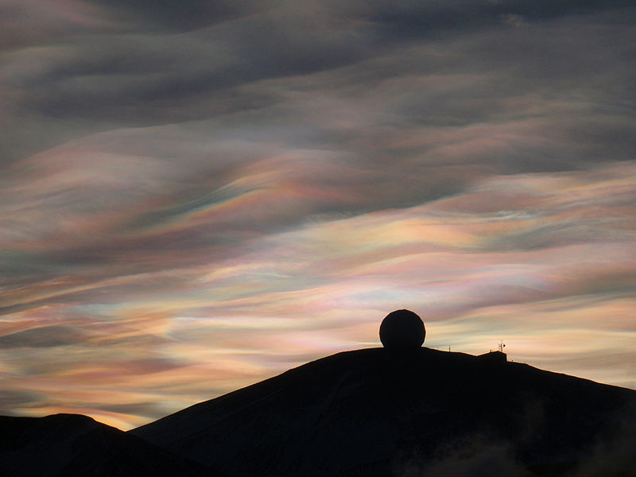
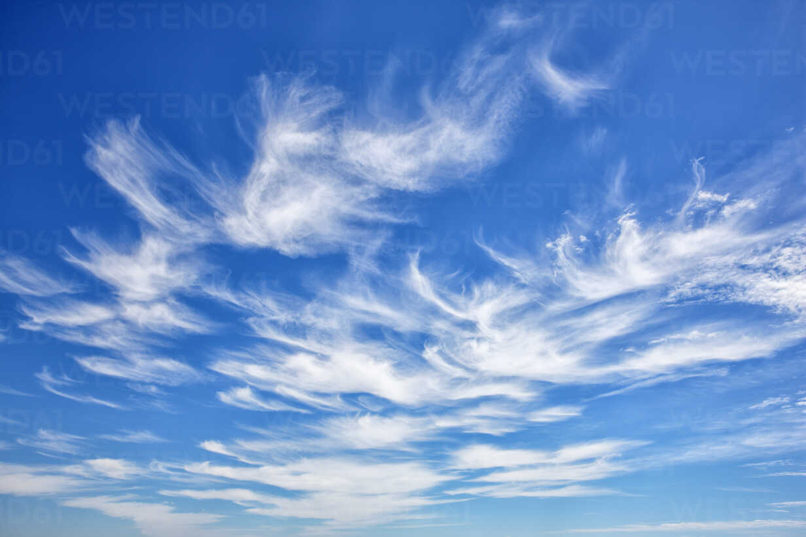
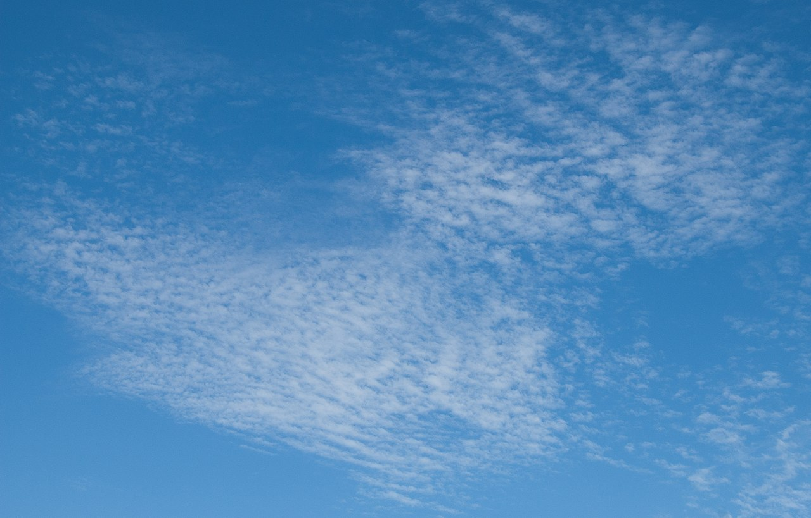
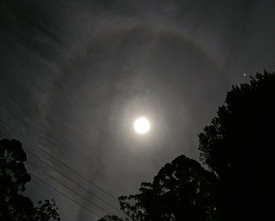
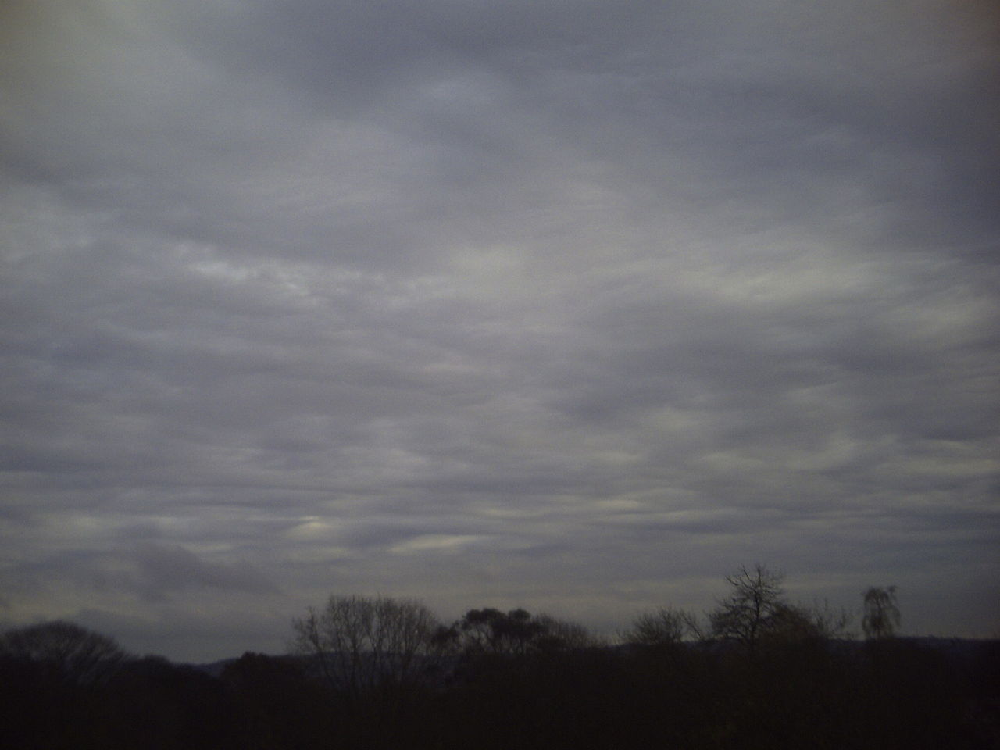
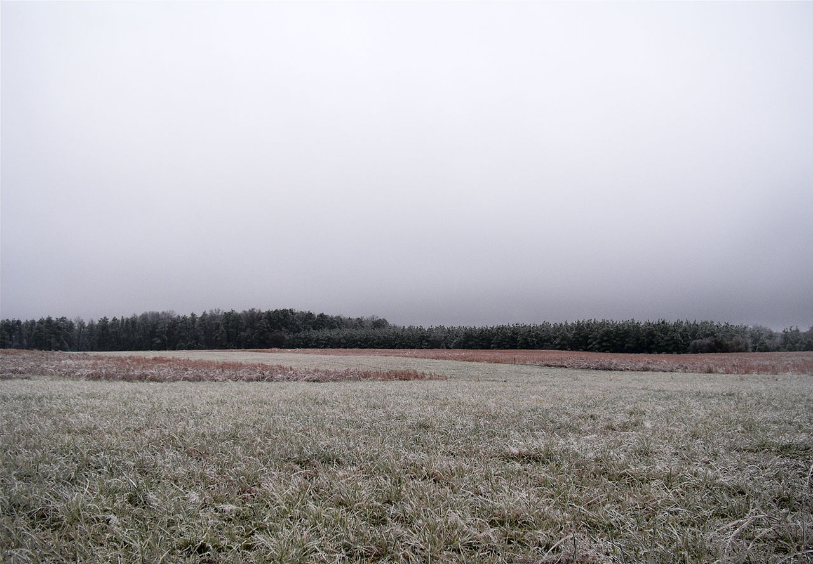

Common Cloud types ordered by height
Noctilucent clouds, or night shining clouds, are tenuous cloud-like phenomena in the upper atmosphere of Earth. When viewed from space, they are called Polar mesospheric clouds, detectable as a diffuse scattering layer of water ice crystals.
They consist of ice crystals and from the ground are only visible during astronomical twilight.
Polar stratospheric clouds (PSCs) are clouds in the winter polar stratosphere. They are best observed during civil twilight, when the Sun is between 1 and 6 degrees below the horizon, as well as in winter and in more northerly latitudes.
One type of these clouds is made of supercooled droplets of water and nitric acid - which makes them implicated in the formation of ozone holes. The other main type only consists of ice crystals which are not harmful.
Cirrus clouds are wispy, feathery, and composed entirely of ice crystals. They often are the first sign of an approaching warm front or upper-level jet streak. Cirrus clouds typically appear white or light grey. They form when water vapor undergoes deposition to ice at altitudes above 5,500 m in temperate regions and above 6,400 m in tropical ones.
Unlike other high-altitude tropospheric clouds like cirrus and cirrostratus, cirrocumulus includes a small amount of liquid water droplets, although these are in a supercooled state. Ice crystals are the predominant component, and typically, the ice crystals cause the supercooled water drops in the cloud to rapidly freeze, transforming the cirrocumulus into cirrostratus. This process can also produce precipitation in the form of a virga consisting of ice or snow. Thus, cirrocumulus clouds are usually short-lived.
Cirrostratus are transparent high clouds, which cover large areas of the sky. They sometimes produce white or coloured rings, spots or arcs of light around the Sun or Moon, that are known as halo phenomena. Sometimes they are so thin that the halo is the only indication that a cirrostratus cloud is in the sky.
Unlike cirrus, cirrostratus clouds form more of a widespread, veil-like layer (similar to what stratus clouds do in low levels).
These clouds can take different forms and vary in size. Yet, most of them are grouped close to little cloudlets. They are usually white or light gray. Yet, their color can vary depending on the weather.
Towering altocumulus, known as altocumulus castellanus, frequently signals the development of thunderstorms later in the day, as it shows instability and convection in the middle levels of the troposphere (the lowest layer of the atmosphere), the area where towering cumulus clouds can turn into cumulonimbus.

Altostratus is formed by the lifting of a large mostly stable air mass that causes invisible water vapor to condense into cloud. It can produce light precipitation, often in the form of virga. If the precipitation increases in persistence and intensity, the altostratus cloud may thicken into nimbostratus.
Cumulonimbus clouds are menacing-looking multi-level clouds, extending high into the sky in towers or plumes. More commonly known as thunderclouds, cumulonimbus is the only cloud type that can produce hail, thunder, and lightning.
Although they can start at 500 meters, Cumolonimus clouds can reach up to 16km, forming impressive shapes.

Cumulus clouds are clouds that have flat bases and are often described as "puffy", "cotton-like" or "fluffy" in appearance.
Normally, cumulus clouds produce little or no precipitation, but they can grow into precipitation-bearing congests or cumulonimbus clouds. Cumulus clouds can be formed from water vapor, supercooled water droplets, or ice crystals, depending upon the ambient temperature. They come in many distinct subforms and generally cool the earth by reflecting the incoming solar radiation.

These clouds are essentially above-ground fog formed either through the lifting of morning fog or through cold air moving at low altitudes over a region. Some call these clouds "high fog" for their fog-like form. While light rain may fall, this cloud does not indicate much precipitation
The term stratus is used to describe flat, hazy, featureless clouds at low altitudes varying in color from dark gray to nearly white..
Leon, 2022